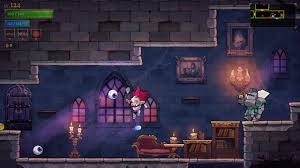
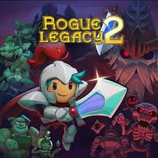

Rogue Legacy 2 es la secuela de Rogue Legacy, un popular juego de acción y aventura de estilo roguelike desarrollado por Cellar Door Games. Al igual que su predecesor, Rogue Legacy 2 presenta una mecánica de juego basada en la muerte y el renacimiento, pero con una serie de mejoras y nuevas características que profundizan la experiencia. El juego se lanzó en acceso anticipado en 2020 y finalmente llegó en su versión completa en 2022.
¿De qué trata Rogue Legacy 2?
En Rogue Legacy 2, los jugadores controlan a un héroe que debe explorar un vasto y peligroso castillo lleno de monstruos, trampas y jefes desafiantes. La particularidad de este título es que, al igual que en el primer juego, cada vez que el protagonista muere, su descendencia (hijos o hijas) toma su lugar en la aventura. Estos nuevos héroes tienen características aleatorias, lo que significa que cada vez que juegas, los personajes pueden tener habilidades, defectos o fortalezas diferentes.
 